Gallery
From the field
Moments from fieldwork, camps and conferences. Select a photo to view it full size.
Maths camps and workshops
Hands-on, gamified maths camps and facilitation across East Africa.
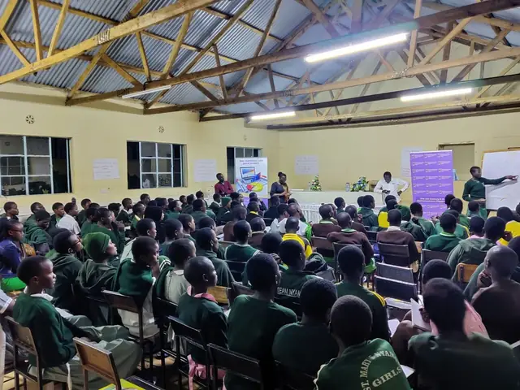
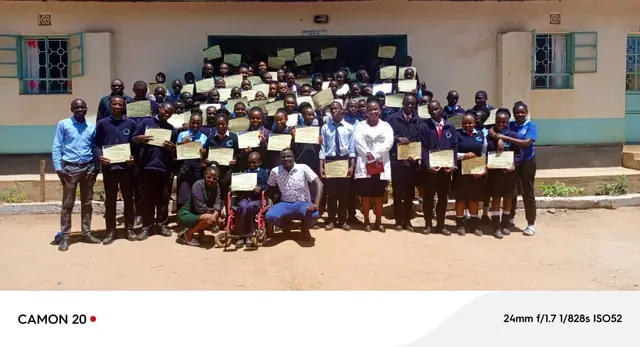
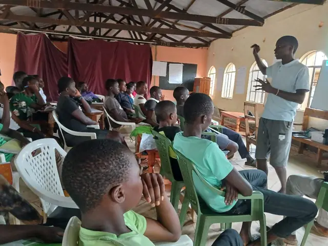
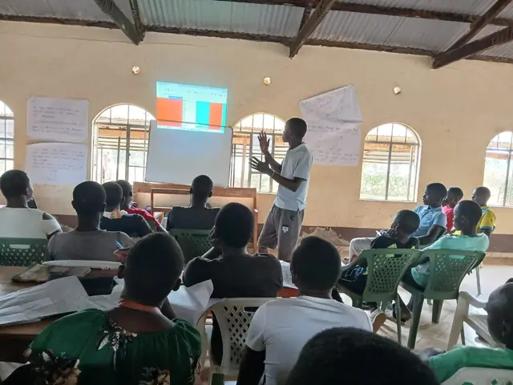
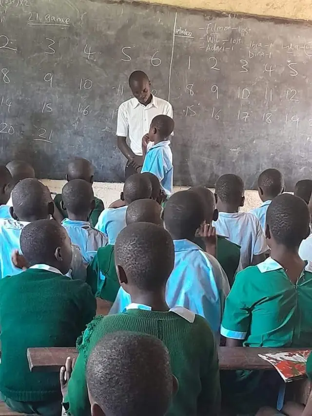
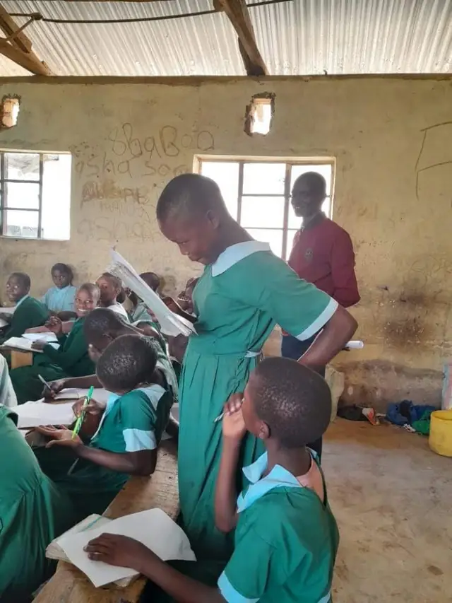
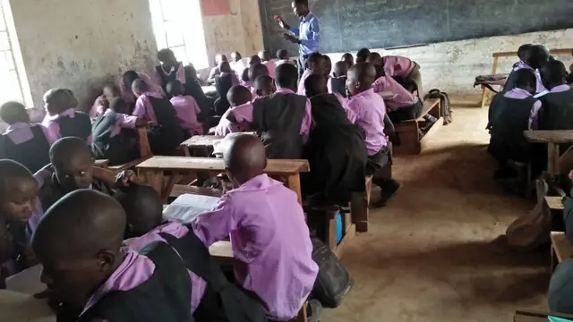
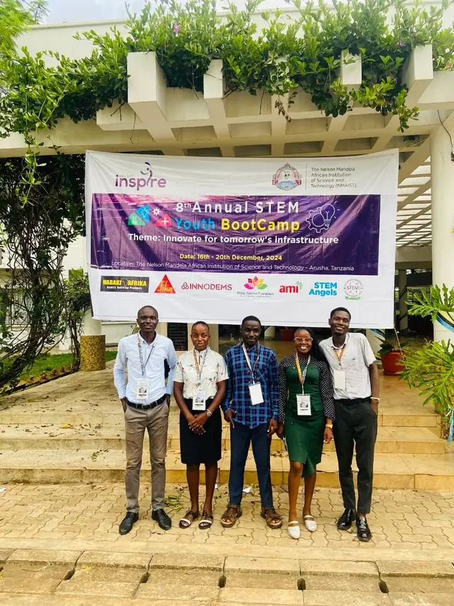
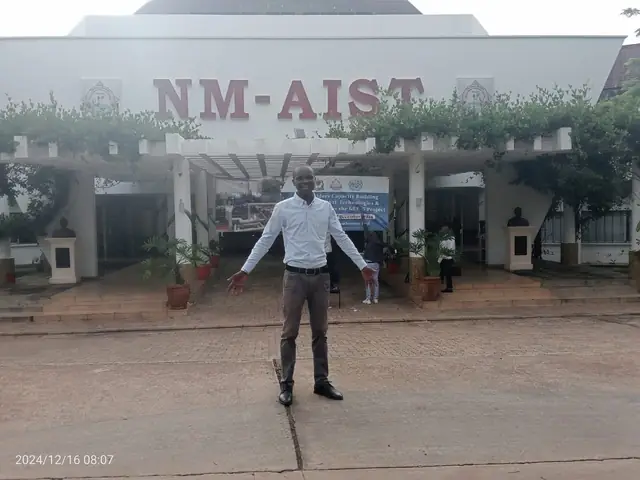
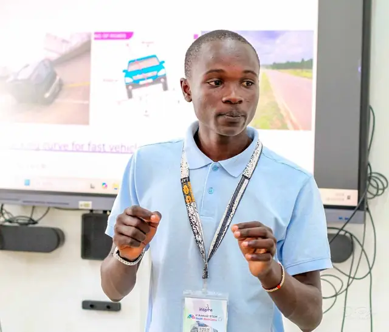
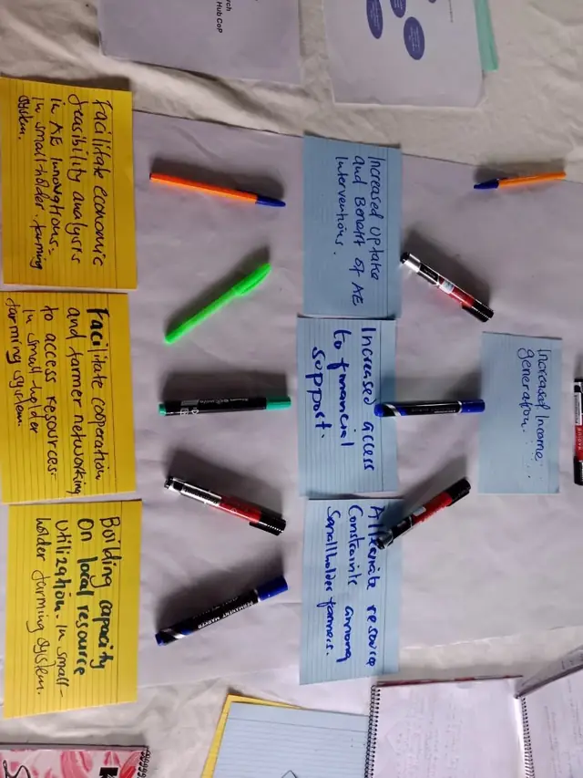
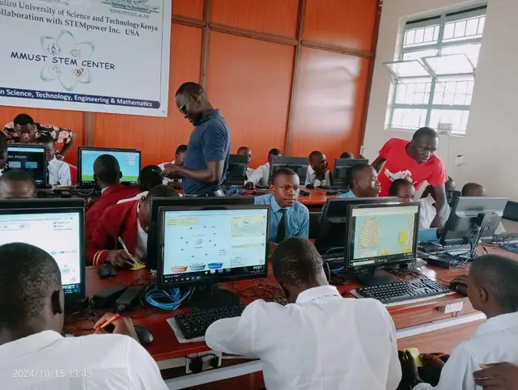
Fieldwork with farmers
Interviews, focus groups and research plots with farmers in western Kenya.
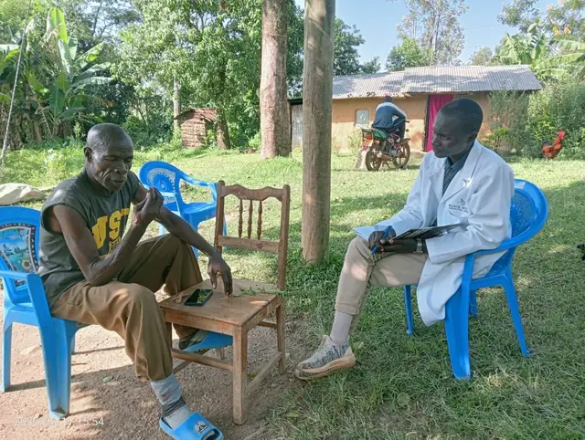
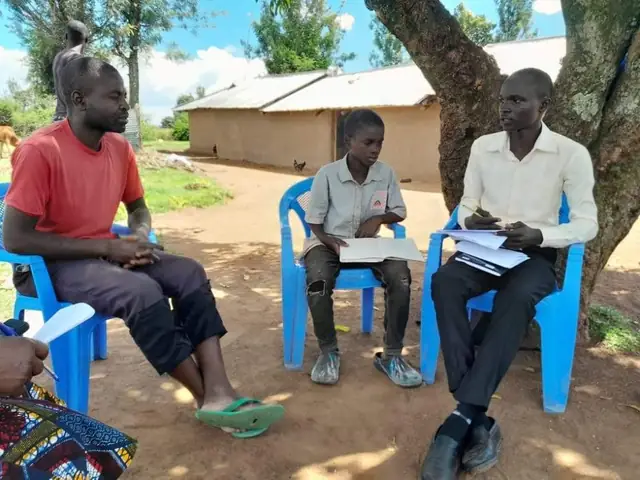
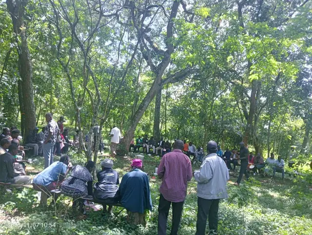
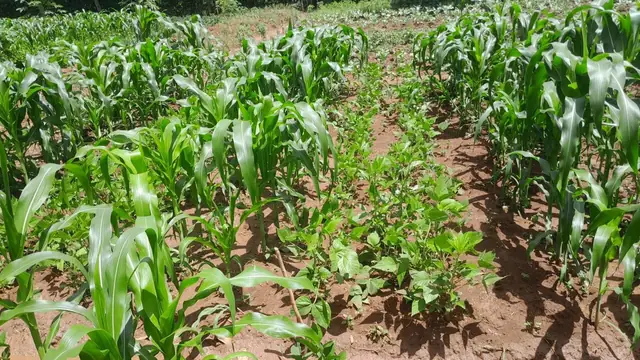
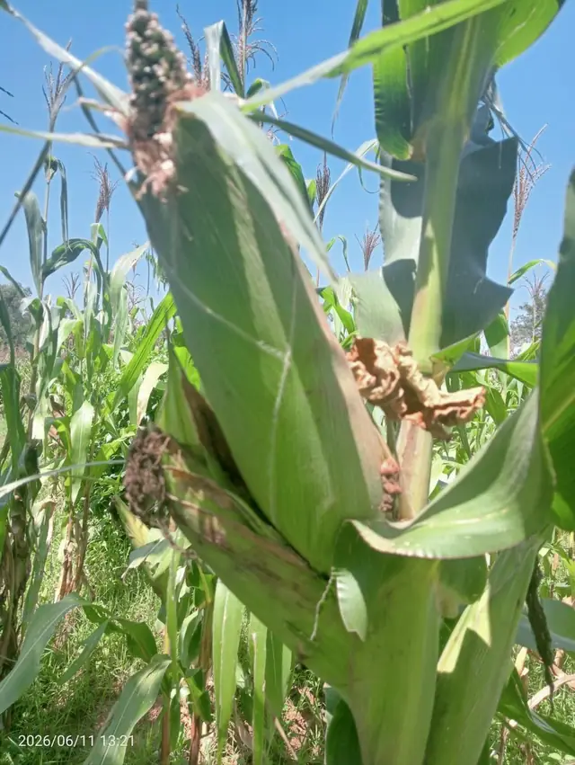
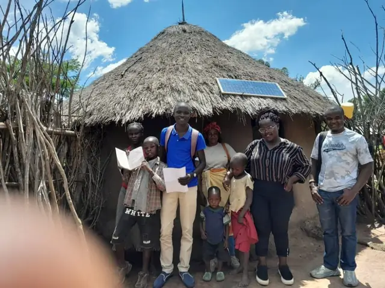
Conferences and meetings
Presenting and learning with peers, including AFRICME7 in Johannesburg.
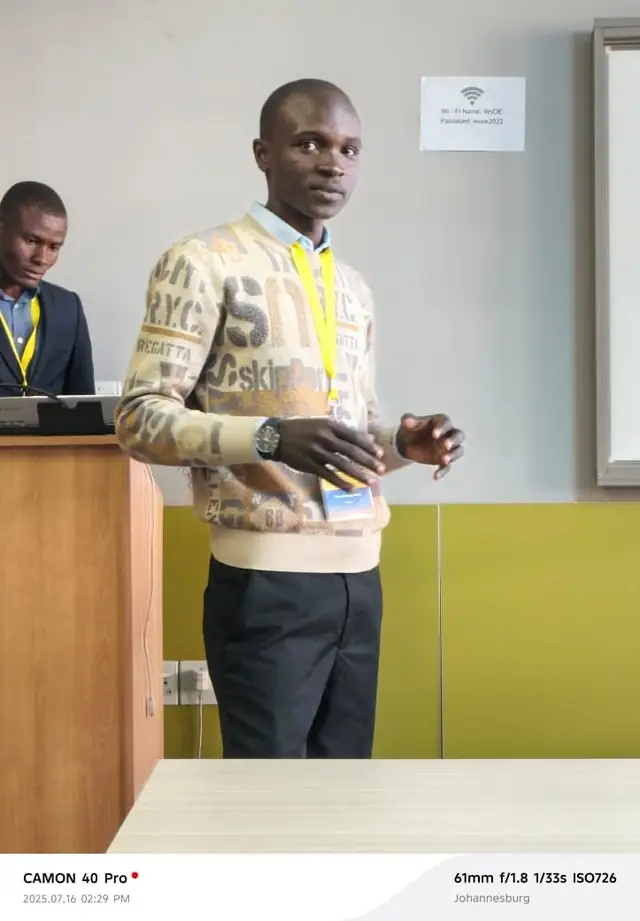
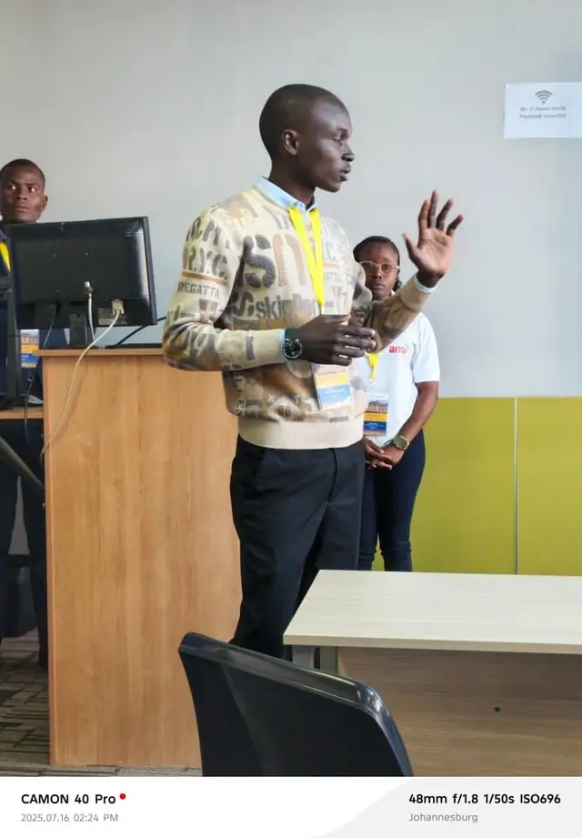
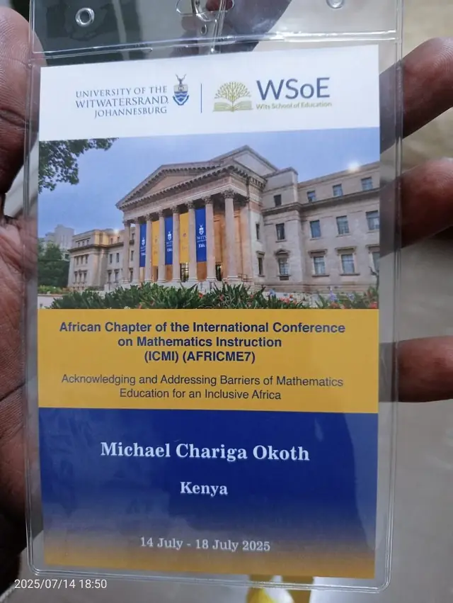
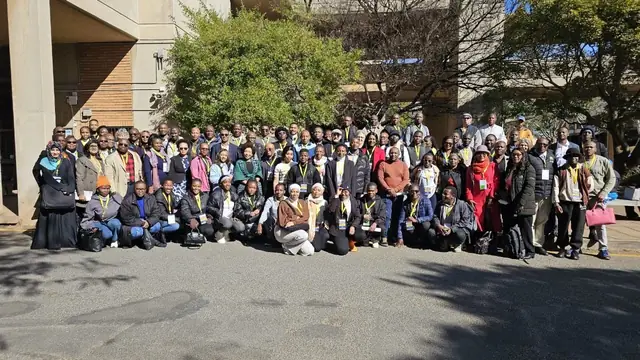
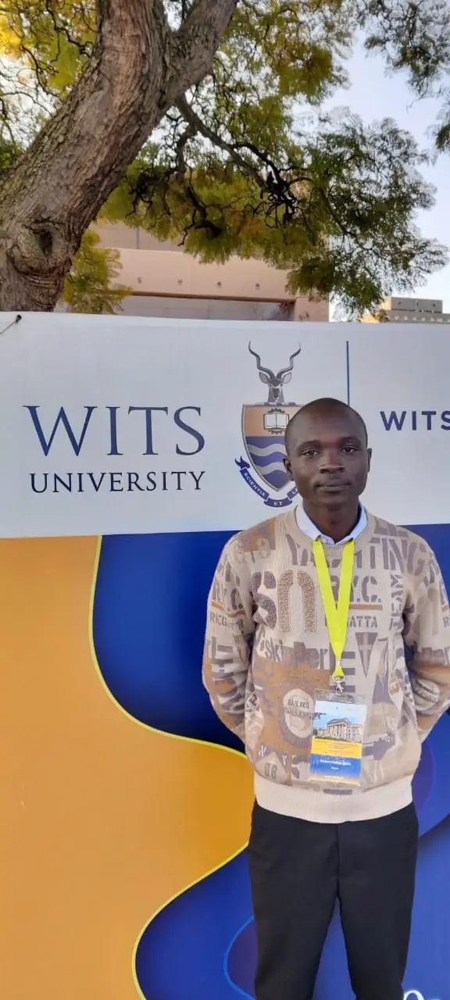
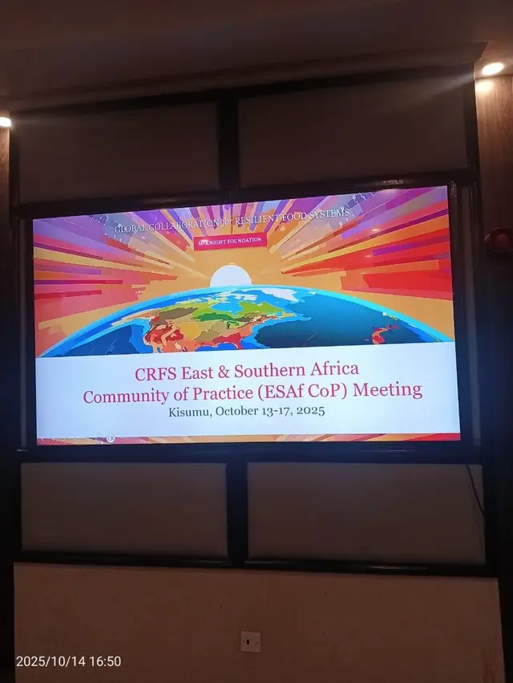
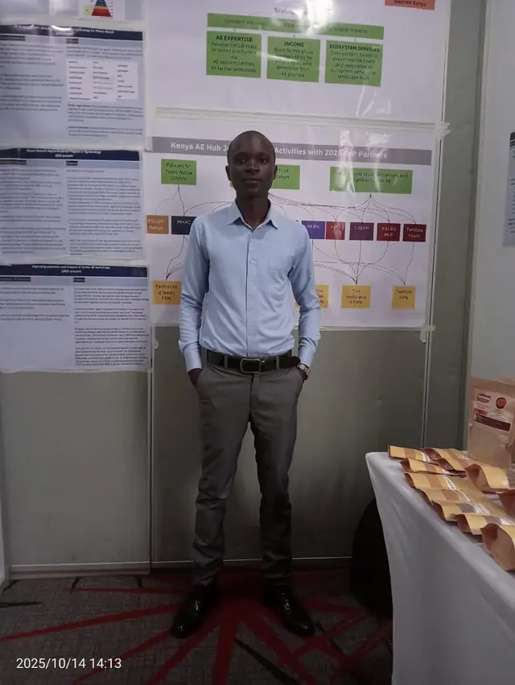